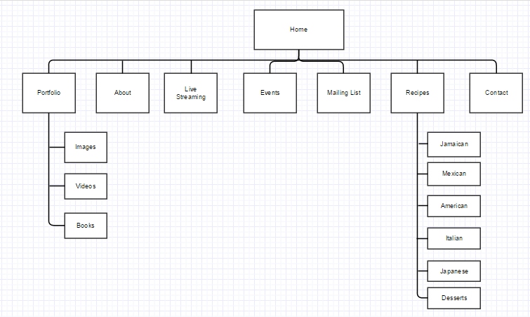

PROCESS
USER PROFILE
The persons who are more likely to visist this website are people who have a passion for cooking. Veterans as well as inexperience chefs. The average persons who are not chefs but would like to lean new creative ways to make thier favorite meals.
Person who visit the website will be looking for content such as recipes, live cooking sessions, images for various dishes from around the world. A professional insite about Niasha Anthony and her work. Ways to interact with Niasha and her weekly featured chefs to gain advice and share experiences.
The main reason why someone would visit Nana's Kitchen is to learn new recipes and interect with Naisha and her work. They will be looking for creative ways yo make new dishes as well as to share thier own.
SITE MAP
WIREFRAMES
Wireframe 1

Wireframe 2

Wireframe 3